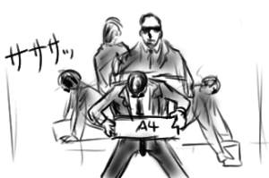
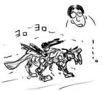

SKYLARKING (1999/10/4)
工場のラインの研修も2週間目ともなると，いくつかの組み立てもまかされるようになり，テキパキと仕事をこなさないと後ろに迷惑をかけるので，毎日同期とキン肉マンの話とかしながらなんとか作業をこなすオレです．割とラインの人たちを助けになっている感じで悪い気はしない，というかむしろオレが救世主！
ネジ止めなんかも2種類の電動ドライバーを使いこなしてビシバシ！っと．図で表すとこんな感じ．
棚整理で段ボール箱をテキパキと右へ左へ移動！整頓！地震対策もバッチリな積み方で！図で表すとこんな感じ．
調子に乗っていたら電動ドライバを没収されました．それから，明日から配置替えが決行されて今まで覚えた仕事が役に立たなくなりました．
しあわせは底なし沼に沈んでいるもんだぜ？＞ヒライワ
Milky Night (1999/10/3)
なんかテレビ東京日曜朝番組的な気分だったので，電車に乗って出かけた．東京は北区の下町商店街で漬け物臭いアーケードを歩きつつ，おもちゃ屋をはしごした．おもちゃ屋の店頭では，おもちゃのサルがシンバルを叩き，おもちゃの犬がよちよちと歩き，足下のくぐもったガラス張りの向こうにレゴの街が見えた．
今おもちゃ界で注目なのは復刻したZOIDSなのであって，昔はおこずかいが少なくて買えなかったあの赤いのやら，あの青いのやらが800円とか2000円で！こんなに安かったでしたっけ？大人の財力万歳！でも，オレの大好きなウォディック(魚型)が復刻しやがってないだけでなく，サーベルタイガーもありゃしないので，レッドホーンにちょっと惹かれながら共和国のコマンドウルフ狼型(ゼンマイ駆動)を購入するだけにとどめておいた．芋虫出すならウォディックを出して下さい＞TOMY
あとシルバニアファミリーの高貴な作りにときめき．他のミニチュア人形ものと比べても解像度が段違いであり，戦争のないおとぎの国もいいかも，というか行きたい！木のお家に住みたい！もっともボクが住んだらゲゲゲハウスですが．ZOIDSのポリキャップよりもシルバニアのベッドのやわらかさの方がリアルな体験で，パラレルンルンだと思った．
帰宅してから，夕飯作るのそっちのけでZOIDS作って大喜び．コマンドウルフが寂しそうにクビをうなだれてトボトボ歩いた．餌を探し求める野良老犬という感じだった．記憶って儚いのですね．
